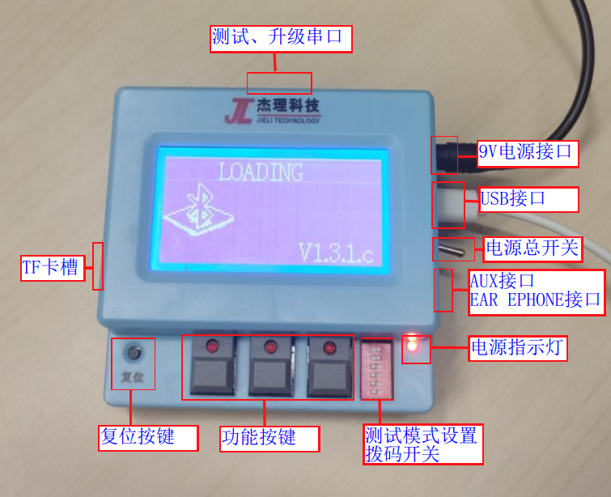
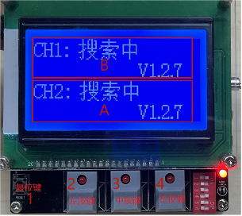

3.1. Test Box Overview
3.1.1. Functional description
The Jieli Technology 1-to-2 Bluetooth test box is mainly used to test and upgrade devices based on all series of Jieli Bluetooth chips. Its main functions are as follows:
(1) Wireless upgrade of Bluetooth devices
(2) Wired upgrade of Bluetooth devices
(3) Bluetooth device tests, including call test, call MIC loopback, BLE test, quick test, frequency offset test, automatic frequency offset correction, etc.
(4) Auxiliary tests for Bluetooth devices
(5) Configuration and use of other functions
3.1.2. Test box components
No. |
Module type |
Components |
Description |
|---|---|---|---|
1 |
Test box main unit |
Main control board |
Controls the operation of the test box |
9V power input |
Main power supply port |
||
Power indicator light |
Lights up when powered on |
||
Main power toggle switch |
Turns the main power on and off |
||
DIP switch |
Test mode setting |
||
3 function buttons |
Control the test and upgrade functions |
||
Reset button |
Resets the chip |
||
USB port |
Used to update the test box firmware and for online testing and upgrading of Bluetooth devices |
||
Upgrade UART port |
Connects to a Bluetooth device for wired UART testing and upgrading |
||
AUX port |
Audio input |
||
EAR PHONE port |
Audio output |
||
TF card slot |
Holds a TF card for offline testing and upgrading |
||
Speaker |
Plays test and upgrade status prompt tones |
||
LCD display |
Shows the test and upgrade status and error messages |
||
2 |
USB data cable |
Connects to a PC to update the test box firmware and for online testing and upgrading of Bluetooth devices |
|
3 |
Power adapter |
Use a power supply rated 9.0V, 2.0A or above |
3.1.3. Test box main unit
Test boxes of different hardware versions have essentially the same functions. The figure below shows the main unit of a hardware version V2.6 test box.

3.1.4. DIP switch functions
Switch number |
Test mode |
Switch settings |
Description |
|---|---|---|---|
1 |
Call test (when BLE test is OFF) |
ON |
Enable call test |
OFF |
Disable call test |
||
BLE master/slave test (when BLE test is ON) |
ON |
BLE master test mode |
|
OFF |
BLE slave test mode |
||
2 |
Call MIC loopback |
ON |
Enable call MIC loopback test |
OFF |
Disable call MIC loopback test |
||
3 |
Quick test |
ON |
Enable quick test |
OFF |
Disable quick test |
||
4 |
Frequency offset test (频偏测试) |
ON |
Enable frequency offset test |
OFF |
Disable frequency offset test |
||
5 |
Automatic frequency offset correction |
ON |
Enable automatic correction (the frequency offset test must also be enabled) |
OFF |
Disable automatic correction |
||
6 |
BLE test |
ON |
Enable BLE test |
OFF |
Disable BLE test |
The advanced audio test is always performed by default.
Call test
When this function is enabled, the test box establishes a phone audio connection with the device, and the call test can then be performed: speak into the device's MIC, and the MIC sound comes out of the test box speaker
Call MIC loopback test
When this function is enabled, speak into the device's MIC: the audio is sent to the test box, which sends it back to the device, and the device's speaker plays it
ON: the MIC sound comes out of the device
OFF: the MIC sound comes out of the test box speaker
Note
To use this function, DIP switch 1 must be ON
Quick test
When this function is enabled and a device is connected, the test box puts the device into quick test mode. The device then turns on sound amplification: speak into the device's MIC and the MIC sound comes out of the speaker; pressing a button on the device plays a key tone.
Note
For this function, the test box only sends the start command; the specific device behavior and flow are supported by the SDK
Frequency offset test (频偏测试)
When this function is enabled, a frequency offset test is performed once the device is connected
Automatic frequency offset correction
Note
The frequency offset test must also be enabled
BLE test
When this function is enabled, you can test the BLE frequency offset, automatic calibration, and the number of the button pressed on the device
Note
When this function is enabled, only automatic frequency offset correction can be configured
3.1.5. Button functions

Reset button
Next test item for device B: music playback test -> call test -> disconnect (with a device connected, double-press to program the authentication code)
Next test item for device A: music playback test -> call test -> disconnect (with a device connected, double-press to program the authentication code)
Disconnect. Press and hold this button while plugging in the PC cable to enter configuration mode